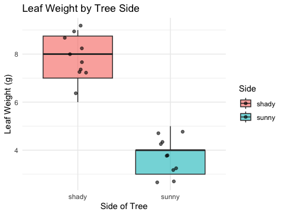
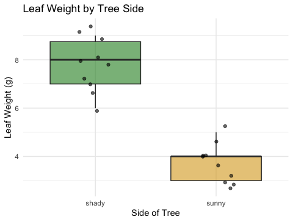
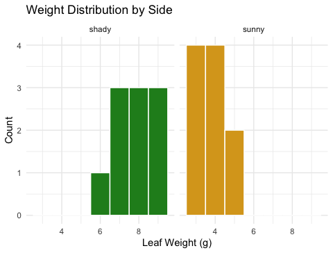
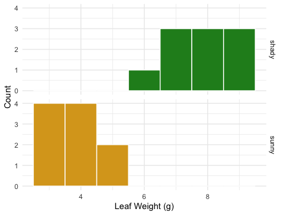
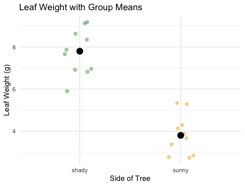
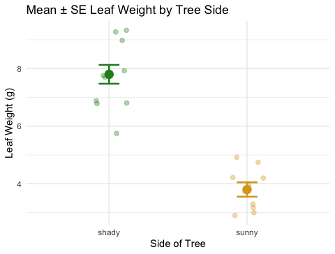

# Load all packages at the top of every script ----------
library(readxl) # reading Excel files
library(tidyverse) # data wrangling + ggplot2
library(janitor) # cleans up messy column namesLecture 03 — GGPlot I
Grouped summaries, facets, and the pipe into ggplot
ggplot
tidyverse
Custom colors with scale_color_manual(), splitting plots into panels with facet_wrap()/facet_grid(), and building a mean ± SE plot with stat_summary() — all piped straight into ggplot().
Where we left off (Lecture 02 — Meeting R)
- Project structure —
data/,scripts/,figures/ - Packages —
install.packages()once,library()every session - Loading data —
read_excel(),clean_names() - The pipe —
%>%reads as “then” - Our first plot — a bare
geom_point()
Note
✅ Key idea from Lecture 02
You can already load data and make one honest point on a page. Today that one geom becomes a whole toolkit: custom colors, side-by-side panels, and a proper mean ± SE summary.
Goals for Today
- Start every plot with the pipe:
tree_df %>% ggplot(...) - Assign colors on purpose with
scale_color_manual() - Split one plot into panels with
facet_wrap()andfacet_grid() - Build a mean ± SE plot with
stat_summary()
Tip
🖐 Try it yourself
By the end you will make a publication-style figure: raw leaf data, grouped and colored on purpose, with the mean and its uncertainty layered on top.
How to Use These Slides — Predict · Type · Run
This lecture runs in three short chunks. After each chunk you switch to the activity worksheet and type the code yourself.
For every code block, do three things:
- Predict — before it runs, say what you think the output will be
- Type it out by hand — do not copy-paste
- Run it and compare to your prediction
Note
✅ Why bother?
facet_wrap()andfacet_grid()look interchangeable until you’ve typed both and watched one wrap into rows while the other insists on a strict grid.- Typing
scale_color_manual(values = c(...))yourself is what makes you notice the color names have to match your group names exactly.
Load Libraries and Data
# Read the leaf data from the data folder ---------------
tree_df <- read_excel("data/2026_06_25_tree_experiment_raw_data.xlsx") %>%
clean_names()
glimpse(tree_df)Rows: 20
Columns: 5
$ index <dbl> 1, 2, 3, 4, 5, 6, 7, 8, 9, 10, 11, 12, 13, 14, 15, 16, 17, 1…
$ side <chr> "sunny", "sunny", "sunny", "sunny", "sunny", "sunny", "sunny…
$ weight_g <dbl> 4, 3, 5, 3, 4, 3, 5, 4, 3, 4, 7, 8, 6, 9, 8, 7, 8, 9, 9, 7
$ width_cm <dbl> 12, 14, 12, 13, 15, 13, 16, 13, 14, 15, 9, 18, 17, 18, 19, 1…
$ height_cm <dbl> 21, 22, 21, 23, 22, 23, 21, 24, 23, 23, 28, 29, 27, 28, 27, …🧩 Chunk 1 of 3 · Piping into ggplot, on Purpose
We will cover: starting a plot with the pipe, and choosing colors with scale_color_manual().
Every Plot Starts the Same Way
# Pipe the data frame straight into ggplot() -----------
tree_df %>%
ggplot(aes(x = side, y = weight_g, fill = side)) +
geom_boxplot(alpha = 0.6, outlier.shape = NA) +
geom_jitter(width = 0.15, alpha = 0.6) +
labs(
title = "Leaf Weight by Tree Side",
x = "Side of Tree",
y = "Leaf Weight (g)",
fill = "Side"
) +
theme_minimal()
tree_df %>% ggplot(...)reads as “taketree_df, then plot it” — the same pipe you’ve already used- Everything after
ggplot()is added with+, not%>%— ggplot layers use plus, pipelines use the pipe fill = sidemaps a column to color — ggplot chooses the colors for you
Warning
⚠️ Watch out!
%>% connects data-wrangling steps. + connects plot layers. Mixing them up is the single most common ggplot error.
Choosing Colors on Purpose — scale_color_manual()
Note
🔮 Predict first: scale_fill_manual() needs one color per group. We have two groups (sunny, shady). How many colors do we need to supply?
# scale_fill_manual() assigns exact colors to exact groups
tree_df %>%
ggplot(aes(x = side, y = weight_g, fill = side)) +
geom_boxplot(alpha = 0.6, outlier.shape = NA) +
geom_jitter(width = 0.15, alpha = 0.6) +
scale_fill_manual(values = c(
"sunny" = "goldenrod",
"shady" = "forestgreen"
)) +
labs(
title = "Leaf Weight by Tree Side",
x = "Side of Tree",
y = "Leaf Weight (g)",
fill = "Side"
) +
theme_minimal() +
theme(legend.position = "none")
scale_fill_manual()— forfill =aesthetics (boxes, bars, columns)scale_color_manual()— forcolor =aesthetics (points, lines)- The names inside
c()must exactly match the values in your data ("sunny","shady") — case and spelling both count
Warning
⚠️ Watch out!
If a name in values = c(...) doesn’t match a value in your data exactly, that group’s color falls back to grey and ggplot prints a warning.
→ ACTIVITY 3 Parts 1–2 now
🧩 Chunk 2 of 3 · Small Multiples with Facets
We will cover: facet_wrap() and facet_grid() — splitting one plot into a panel per group.
facet_wrap() — One Panel per Group
# facet_wrap() splits into one panel per level ---------
tree_df %>%
ggplot(aes(x = weight_g, fill = side)) +
geom_histogram(binwidth = 1, color = "white") +
facet_wrap(~side) +
scale_fill_manual(values = c("sunny" = "goldenrod", "shady" = "forestgreen")) +
labs(x = "Leaf Weight (g)", y = "Count", title = "Weight Distribution by Side") +
theme_minimal() +
theme(legend.position = "none")
~sidereads as “by side” — the~is required- Each panel gets its own copy of the plot, filtered to that group
facet_wrap(~side, scales = "free_y")lets each panel’s y-axis rescale independently
facet_grid() — a Strict Rows-and-Columns Grid
# facet_grid(rows ~ cols) — use "." for "no grouping" --
tree_df %>%
ggplot(aes(x = weight_g, fill = side)) +
geom_histogram(binwidth = 1, color = "white") +
facet_grid(side ~ .) +
scale_fill_manual(values = c("sunny" = "goldenrod", "shady" = "forestgreen")) +
labs(x = "Leaf Weight (g)", y = "Count") +
theme_minimal() +
theme(legend.position = "none")
facet_grid(side ~ .)stacks panels in rows;facet_grid(. ~ side)arranges them in columns- The dot
.means “nothing on this side of the grid” facet_grid()really shines with two grouping variables (rows ~ cols) — we only have one (side) today, but you’ll use the two-variable form the moment your data has a second grouping column
Note
💡 facet_wrap vs facet_grid
Use facet_wrap() for one grouping variable — it wraps panels into a grid automatically. Use facet_grid() when you have two variables and want rows and columns to each mean something specific.
→ ACTIVITY 3 Part 3 now
🧩 Chunk 3 of 3 · Mean ± SE with stat_summary()
We will cover: layering a group mean and its standard error directly on top of raw data — no summary table needed.
stat_summary() — the Mean as a Layer
# stat_summary() computes the mean straight from the data
tree_df %>%
ggplot(aes(x = side, y = weight_g, color = side)) +
geom_jitter(width = 0.15, alpha = 0.4, size = 2) +
stat_summary(fun = mean, geom = "point", size = 4, color = "black") +
scale_color_manual(values = c("sunny" = "goldenrod", "shady" = "forestgreen")) +
labs(
title = "Leaf Weight with Group Means",
x = "Side of Tree", y = "Leaf Weight (g)"
) +
theme_minimal() +
theme(legend.position = "none")
stat_summary()computes a statistic from the raw data and draws it — no pre-built summary table neededfun = mean— any function that returns one number (mean,median,max, …)geom = "point"— draw that number as a point- Put
geom_jitter()beforestat_summary()so the mean sits on top of the raw points, not buried under them
stat_summary() — Mean ± SE
Note
🔮 Predict first: fun.data = mean_se returns three numbers per group instead of one (the mean, and the bar’s top and bottom). What do you think those three are called?
# fun.data = returns THREE values: y, ymin, ymax -------
tree_mean_se_plot <- tree_df %>%
ggplot(aes(x = side, y = weight_g, color = side)) +
geom_jitter(width = 0.15, alpha = 0.35, size = 2) +
stat_summary(fun = mean, geom = "point", size = 4) +
stat_summary(
fun.data = mean_se,
geom = "errorbar",
width = 0.15,
linewidth = 0.9
) +
scale_color_manual(values = c("sunny" = "goldenrod", "shady" = "forestgreen")) +
labs(
title = "Mean ± SE Leaf Weight by Tree Side",
x = "Side of Tree", y = "Leaf Weight (g)"
) +
theme_minimal() +
theme(legend.position = "none")
tree_mean_se_plot
Two stat_summary() layers, stacked:
| call | what it draws |
|---|---|
fun = mean |
a point at the mean |
fun.data = mean_se |
error bars for ± 1 SE |
- Raw points in the background (
alpha = 0.35) - Mean as a larger foreground point
- Error bars = ± 1 SE
📖 Whitlock & Schluter, Ch. 3 — Describing Data
→ ACTIVITY 3 Parts 4–5 now
What We Learned Today
- Pipe straight into a plot:
tree_df %>% ggplot(...) scale_color_manual()/scale_fill_manual()— colors you choose, not colors ggplot guessesfacet_wrap(~var)— one panel per group, wraps automaticallyfacet_grid(rows ~ cols)— strict grid, best with two grouping variablesstat_summary()— mean and mean ± SE, drawn directly from raw data